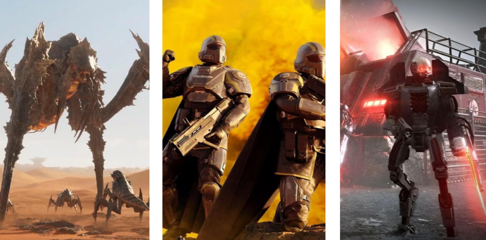
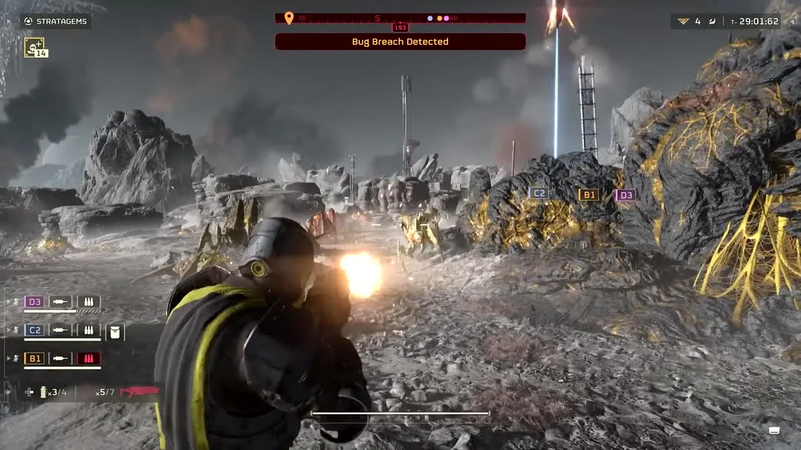

Helldivers 2 — это кооперативный шутер от третьего лица (PvE), где команда до 4-х игроков сражается с инопланетными жуками (Терминидами) и роботами (Автоматонами) за «управляемую демократию» Суперземли. Игра, известная своим высоким уровнем хаоса, «дружественным огнем» и сатирой на милитаризм, предлагает динамичные миссии, стратагемы (вызов орбитальных ударов) и кроссплатформенный мультиплеер.
Действие Helldivers 2 разворачивается в далёком будущем, спустя столетие после победы Супер-Земли, "управляемой демократии", над своими противниками в событиях первой игры. В течение эпохи мира и процветания Супер-Земля колонизировала галактику, подпитываясь ресурсом Э-710, найденным в разлагающихся телах Терминидов. Однако Терминиды вырвались из своих ферм, угрожая посеять хаос по всей галактике. Одновременно с этим появилась новая угроза в виде Автоматонов - полностью механизированных солдат. Игра начинается в тот момент, когда Адские десантники снова начинают набор в свою армию, чтобы использовать ее в качестве патриотического ударного десанта для отвоевания колонизированных земель. Дополнительные сюжетные элементы происходят в мире игры через разнообразные пропагандистские сообщения.

В отличие от Helldivers, которая представляет собой шутер с видом сверху вниз, Helldivers 2 - шутер от третьего лица. Как и в первой игре, игроки могут выбирать стратагемы - сбрасываемые на поле боя объекты, которые можно вызывать во время миссий и которые включают кассетные бомбы, турели, генераторы щита или капсулы с мощным оружием. Огонь по своим в этой игре всегда включён. Система бронирования в игре вдохновлена реальным огнестрельным оружием, стреляющим по бронированным целям. Если в Helldivers был кооперативный режим с разделением экрана, то в Helldivers 2 его нет. Есть многопользовательская игра с участием до четырех игроков, но нет одиночной кампании. В игре также предусмотрена функция кросс-платформенной игры между игроками PlayStation 5 и Windows. В первые дни после выхода в геймплее присутствовали наблюдатели из студии-разработчика, которые влияли на игровой процесс в реальном времени.

Это прекрасная и интересная игра, которую любят многие игроки и, конечно, ее разработчики. Она стоит своих денег и я советую всем купить ее, чтобы получить незабываемые ощущения от невероятного геймплея.
Авторы игры:
Перейти на страницу в playstation Перейти на страницу в steam